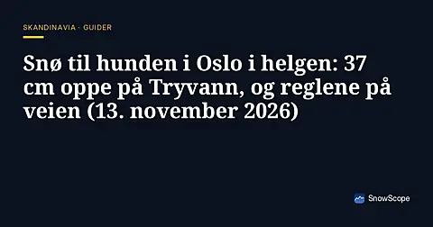

Oslo: snø i dag
Oslo: snø i dag. Dette er den første ordentlige snøhelgen for Oslos hunder. I byen er snøen tynn, 4 cm på Blindern, men oppe i Nordmarka er den dyp: …
Snø til hunden i Oslo i helgen: 37 cm oppe på Tryvann, og reglene på veien (13. november 2026)

Dette er den første ordentlige snøhelgen for Oslos hunder. I byen er snøen tynn, 4 cm på Blindern, men oppe i Nordmarka er den dyp: 31 cm på Bjørnholt og 37 cm på Tryvannshøgda, det meste falt det siste døgnet. Lørdag er kald og tørr. Her er hvor dere skal, og hvilke regler som gjelder.
Oppover for den ordentlige snøen
Høyden er alt i helgen. I byen er bakken så vidt hvit; nord for byen har Hakadal på 170 m 15 cm, og høyere oppe i Nordmarka ligger det 31 til 37 cm. Beste plan er å ta hunden opp til skogkanten, rundt Frognerseteren, Sognsvann eller åsene ved Tryvann.
Lørdag er dagen: tørt, fra rundt -4 °C om natten til noen få plussgrader. Søndag blir mildere, og mandag gir rundt 10 mm regn, som tar snøen i byen først.

Hundeeiere i Oslo, 13. november 2026: 4 cm snø på Blindern, 31 cm på Bjørnholt og 37 cm på Tryvannshøgda. Hvor hunden kan løpe løs, hva båndtvangsreglene sier i november, og en kald, tørr lørdag.

Målt snødybde i Oslo 13. november 2026: 4 cm på Blindern, 31 cm på Bjørnholt og 37 cm på Tryvannshøgda. Slik ser en vanlig midten av november ut, og dette gjør helgen med snøen.